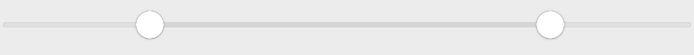
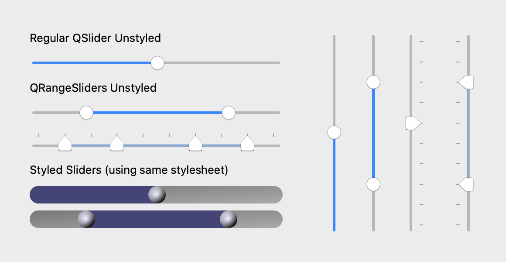
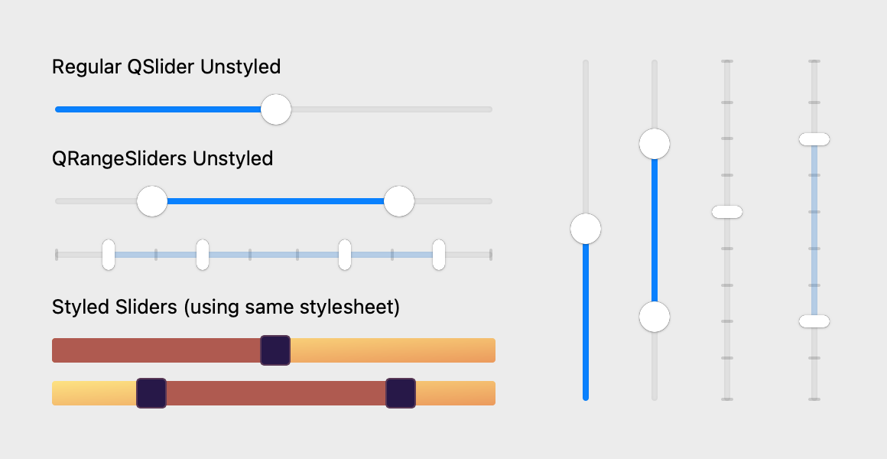
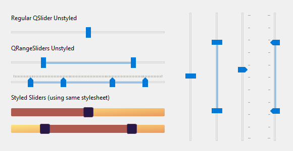
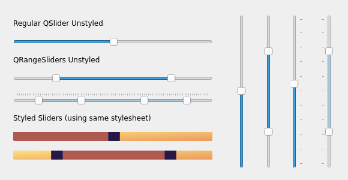

QRangeSlider
A multi-handle slider widget than can be used to select a range of values.
from qtpy.QtCore import Qt
from qtpy.QtWidgets import QApplication
from superqt import QRangeSlider
app = QApplication([])
slider = QRangeSlider(Qt.Orientation.Horizontal)
slider.setValue((20, 80))
slider.show()
app.exec_()

QRangeSliderinherits fromQSliderand attempts to match the Qt API as closely as possible- It uses platform-specific styles (for handle, groove, & ticks) but also supports QSS style sheets.
- Supports mouse wheel events
- Supports more than 2 handles (e.g.
slider.setValue([0, 10, 60, 80]))
As QRangeSlider inherits from
QtWidgets.QSlider, you can use all of
the same methods available in the QSlider
API. The major difference is that value()
and sliderPosition() are reimplemented as tuples of int (where the length of
the tuple is equal to the number of handles in the slider.)
These options are in addition to the Qt QSlider API, and control the behavior of the bar between handles.
| getter | setter | type | default | description |
|---|---|---|---|---|
barIsVisible |
setBarIsVisible hideBar / showBar |
bool |
True |
Whether the bar between handles is visible. |
barMovesAllHandles |
setBarMovesAllHandles |
bool |
True |
Whether clicking on the bar moves all handles or just the nearest |
barIsRigid |
setBarIsRigid |
bool |
True |
Whether bar length is constant or "elastic" when dragging the bar beyond min/max. |
Screenshots
code that generates the images below
import os
from qtpy import QtCore
from qtpy import QtWidgets as QtW
# patch for Qt 5.15 on macos >= 12
os.environ["USE_MAC_SLIDER_PATCH"] = "1"
from superqt import QRangeSlider # noqa
QSS = """
QSlider {
min-height: 20px;
}
QSlider::groove:horizontal {
border: 0px;
background: qlineargradient(x1:0, y1:0, x2:1, y2:1, stop:0 #888, stop:1 #ddd);
height: 20px;
border-radius: 10px;
}
QSlider::handle {
background: qradialgradient(cx:0, cy:0, radius: 1.2, fx:0.35,
fy:0.3, stop:0 #eef, stop:1 #002);
height: 20px;
width: 20px;
border-radius: 10px;
}
QSlider::sub-page:horizontal {
background: qlineargradient(x1:0, y1:0, x2:1, y2:1, stop:0 #227, stop:1 #77a);
border-top-left-radius: 10px;
border-bottom-left-radius: 10px;
}
QRangeSlider {
qproperty-barColor: qlineargradient(x1:0, y1:0, x2:1, y2:1, stop:0 #227, stop:1 #77a);
}
"""
Horizontal = QtCore.Qt.Orientation.Horizontal
class DemoWidget(QtW.QWidget):
def __init__(self) -> None:
super().__init__()
reg_hslider = QtW.QSlider(Horizontal)
reg_hslider.setValue(50)
range_hslider = QRangeSlider(Horizontal)
range_hslider.setValue((20, 80))
multi_range_hslider = QRangeSlider(Horizontal)
multi_range_hslider.setValue((11, 33, 66, 88))
multi_range_hslider.setTickPosition(QtW.QSlider.TickPosition.TicksAbove)
styled_reg_hslider = QtW.QSlider(Horizontal)
styled_reg_hslider.setValue(50)
styled_reg_hslider.setStyleSheet(QSS)
styled_range_hslider = QRangeSlider(Horizontal)
styled_range_hslider.setValue((20, 80))
styled_range_hslider.setStyleSheet(QSS)
reg_vslider = QtW.QSlider(QtCore.Qt.Orientation.Vertical)
reg_vslider.setValue(50)
range_vslider = QRangeSlider(QtCore.Qt.Orientation.Vertical)
range_vslider.setValue((22, 77))
tick_vslider = QtW.QSlider(QtCore.Qt.Orientation.Vertical)
tick_vslider.setValue(55)
tick_vslider.setTickPosition(QtW.QSlider.TicksRight)
range_tick_vslider = QRangeSlider(QtCore.Qt.Orientation.Vertical)
range_tick_vslider.setValue((22, 77))
range_tick_vslider.setTickPosition(QtW.QSlider.TicksLeft)
szp = QtW.QSizePolicy.Maximum
left = QtW.QWidget()
left.setLayout(QtW.QVBoxLayout())
left.setContentsMargins(2, 2, 2, 2)
label1 = QtW.QLabel("Regular QSlider Unstyled")
label2 = QtW.QLabel("QRangeSliders Unstyled")
label3 = QtW.QLabel("Styled Sliders (using same stylesheet)")
label1.setSizePolicy(szp, szp)
label2.setSizePolicy(szp, szp)
label3.setSizePolicy(szp, szp)
left.layout().addWidget(label1)
left.layout().addWidget(reg_hslider)
left.layout().addWidget(label2)
left.layout().addWidget(range_hslider)
left.layout().addWidget(multi_range_hslider)
left.layout().addWidget(label3)
left.layout().addWidget(styled_reg_hslider)
left.layout().addWidget(styled_range_hslider)
right = QtW.QWidget()
right.setLayout(QtW.QHBoxLayout())
right.setContentsMargins(15, 5, 5, 0)
right.layout().setSpacing(30)
right.layout().addWidget(reg_vslider)
right.layout().addWidget(range_vslider)
right.layout().addWidget(tick_vslider)
right.layout().addWidget(range_tick_vslider)
self.setLayout(QtW.QHBoxLayout())
self.layout().addWidget(left)
self.layout().addWidget(right)
self.setGeometry(600, 300, 580, 300)
self.activateWindow()
self.show()
if __name__ == "__main__":
import sys
from pathlib import Path
dest = Path("screenshots")
dest.mkdir(exist_ok=True)
app = QtW.QApplication([])
demo = DemoWidget()
if "-snap" in sys.argv:
import platform
QtW.QApplication.processEvents()
demo.grab().save(str(dest / f"demo_{platform.system().lower()}.png"))
else:
app.exec_()
macOS
Catalina

Big Sur

Windows

Linux

Qt Class
Methods
MultiHandle Range Slider widget.
Same API as QSlider, but value, setValue, sliderPosition, and
setSliderPosition are all sequences of integers.
The valueChanged and sliderMoved signals also both emit a tuple of
integers.
barColor = Property(QtGui.QBrush, _getBarColor, _setBarColor)
class-attribute
The color of the bar between the first and last handle.
applyMacStylePatch() -> str
Apply a QSS patch to fix sliders on macos>=12 with QT < 6.
see FAQ for more details.
barIsRigid() -> bool
Whether bar length is constant when dragging the bar.
If False, the bar can shorten when dragged beyond min/max. Default is True.
barIsVisible() -> bool
Whether to show the bar between the first and last handle.
barMovesAllHandles() -> bool
Whether clicking on the bar moves all handles, or just the nearest.
hideBar() -> None
Hide the bar between the first and last handle.
setBarIsRigid(val: bool = True) -> None
Whether bar length is constant when dragging the bar.
If False, the bar can shorten when dragged beyond min/max. Default is True.
setBarMovesAllHandles(val: bool = True) -> None
Whether clicking on the bar moves all handles, or just the nearest.
setBarVisible(val: bool = True) -> None
Whether to show the bar between the first and last handle.
showBar() -> None
Show the bar between the first and last handle.
Type changes
Note the following changes in types compared to the QSlider API:
value() -> Tuple[int, ...]
setValue(val: Sequence[int]) -> None
# Signal
valueChanged(Tuple[int, ...])
sliderPosition() -> Tuple[int, ...]
setSliderPosition(val: Sequence[int]) -> None
sliderMoved(Tuple[int, ...])